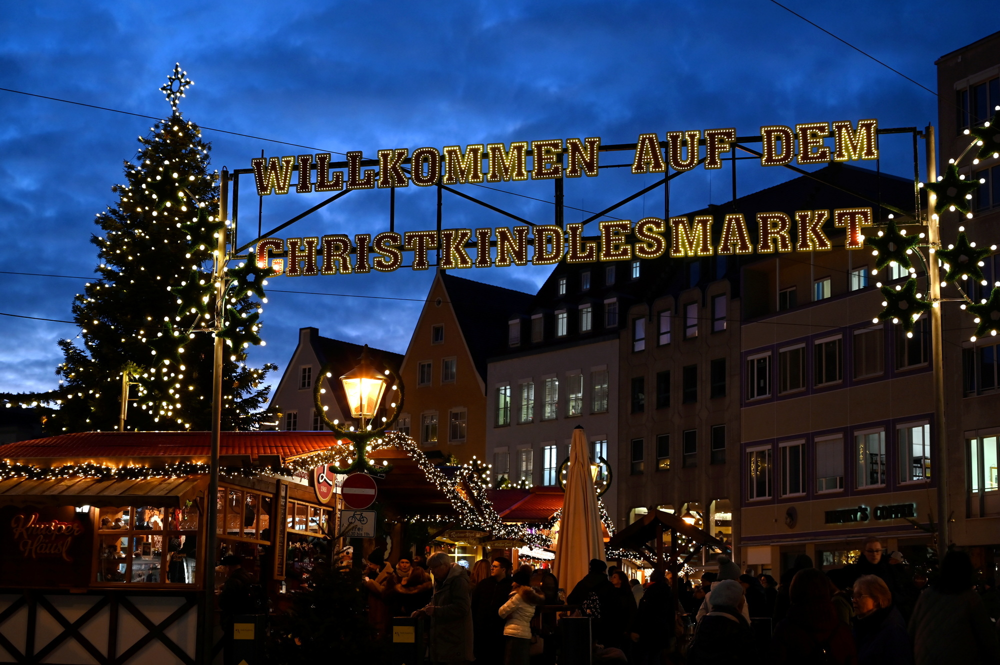
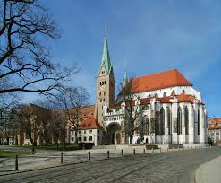
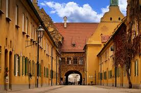
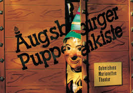

Augsburg
Eine sehr alte und schöne Stadt.
01. Christkindlesmarkt
Dieser Markt ist sehr alt und berühmt. Er findet immer im Dezember statt. Man kann dort Glühwein trinken und das Engelesspiel am Rathaus sehen. Das ist sehr schön.
02. Rathaus & Perlachturm
Das Rathaus ist das Zentrum von Augsburg. Der Goldene Saal ist sehr teuer und glänzt überall. Man kann auch auf den Perlachturm steigen. Von dort sieht man die ganze Stadt.

03. Augsburger Dom
Der Dom ist eine große, alte Kirche. Er hat sehr alte Fenster mit bunten Bildern. Es ist dort sehr ruhig. Man kann viel über die Geschichte von früher lernen.
04. Die Fuggerei
Die Fuggerei ist die älteste Sozialsiedlung der Welt. Die Menschen dort bezahlen fast keine Miete. Sie kostet nur 0,88 Euro pro Jahr. Das ist wie ein Museum, in dem Leute wohnen.
05. Augsburger Puppenkiste
Das ist ein Theater für Puppen. Es ist sehr bekannt in ganz Deutschland. Es gibt dort lustige Figuren wie Jim Knopf. Kinder und Erwachsene besuchen das Theater gerne.
